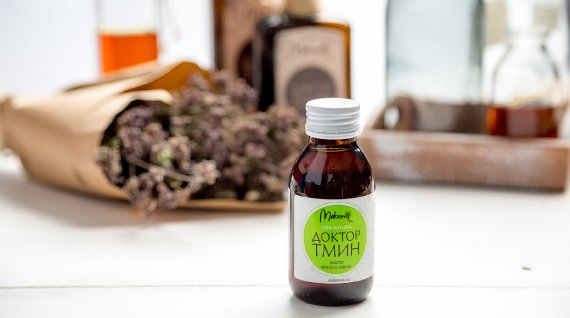

Применение черного тмина при мужских заболеваниях
При простатите
Смешать 1 кг пчелиного мёда с 7 столовыми ложками молотого чёрного тмина, принимать утром и вечером, за 2 часа до еды по 1 ст. ложке.
Хронический простатит
- Смешать 70-100 г меда и 2 чайные ложки пыльцы. Применять по 1 столовой ложке Зраза в день (другие сладости исключить), Длительность курса лечения - 1,5 месяца, затем делают перерыв, после которого курс может быть повторен.
- Протирать маслом чёрного тмина основание спины (нижнюю часть) и массажировать, смазывая под яичками круговыми движениями.
- Смешать полстакана тёплой воды, 1 столовую ложку мёда, 1 чайную ложку молотого чёрного тмита, чайную ложку ромашки и принимать утром. Это одна порция.
Воспаление половых органов
Хорошо промыть это место водой с мылом, затем натереть маслом чёрного тмина воспалившиеся участки. Сделать это вечером и оставить до утра. Курс лечения - 7-10 дней.
Аденома предстательной железы
- Принимать по 1 чайной ложке 10-процентного прополисного меда (держать во рту до полного растворения) 2-3 раза в день за 20-30 мин до еды. Курс лечения - 1 месяц, затем следует сделать перерыв на 10-12 дней и повторить курс.
- Протирать маслом чёрного тмина основание спины (нижнюю часть) и массажировать, смазывая под яичками круговыми движениями. Смешать полстакана тёплой воды, 1 сюловую ложку мёда, 1 чайшую ложку молотого черного тмина, чайную ложку ромашки и принимать утром. Это одна порция.
Для улучшения потенции (Половая слабость)
- Разрезать на мелкие кусочки головку чеснока и зажаритъ в масле черного тмина на слабом огне, пока не пожелтеет чеснок. Затем смесь поместить в маленькую стеклянную бутылочку или банку с плотной крышкой. При необходимости протирать лобок и основание полового органа, массажируя круговыми движениями. Смыть смесь спустя 1 час.
- Если выпить масло черного тмина с растением босвеллой и ладаном, восстановится половая способность даже после полного бессилия- после потери надежны.
- Протирать маслом черного тмина основание спины (нижнюю часть) и массажировать, протирать пах. Размешать в 1/2 стакане теплой воды одну ложку меда, 1 ч. ложку черного тмина и чайную ложку, ромашки и принимать в любое время.
При ослаблении потенции
100 г. молотого черного тмина смешивают с 100 г. оливкового масла и 30 г. ладана (алабамум). Принимать 1 чайную ложку B 1 paз в день.
При импотенции
Смесь из следующих компонентов: мед - 1,5 стакана, орехи грецкие (ядро) - 1 стакан, курага (лучше урюк) -1 стакан, изюм (без косточек) - 1 стакан, чернослив -1 стакан, лимон с кожурой - 2 шт. Все компоненты перемолоть и залить 1 стаканом меда. . Все перемешать. принимать по 1 столовой ложке 3 раза в день за 1 час до еды. Курс лечения 1 -2 порции.
При аденоме
Принимать утром и вечером по 25 штук нежареных тыквенных семечек. Желательно постоянно заваривать чай из семян черного тмина. 1 ст. ложку семян черного тмина залить 1,5 стакана кипятка, варить 5-7 минут, настоять 10 минут, процедить. Пить по 1/2 стакана 3 раза в день.